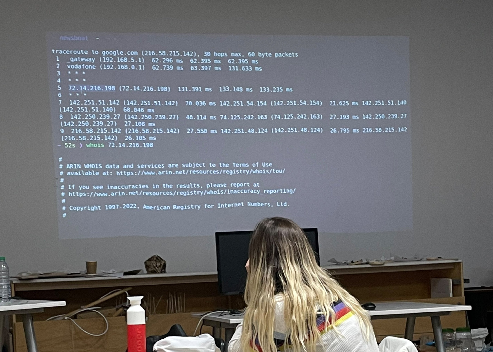

Internet is defined by protocols not platforms, which are all connected with each other, where the protocols can be centralised, desentralised or distributed. Also there are more users using internet for facebook than for other pages. The platforms (Facebook, Whatsapp, Instagramm,…) are so big so we forget that this happens in the internet. There is not just one sight to communicate, they all together. But for example the gemini protocol refers to the totality of information provided via the Gemini protocol. The Gemini protocol is a network protocol for retrieving documents over the Internet that emphasizes simplicity and text-oriented content. In this way Gemini is similar to Gopher, but is based on encrypted connections to protect user privacy. Book: Critical Engeneering Book: Critical Engeneering
Sometimes its hard to find a way of designing something and avoiding to get copied, because you are not the owner when you are a designer, people are allowed to see it. But there are many processes going on to chase copyrights. NFT´s for example have a clear copyright through the blockchain. Its not possible to copy them, each of them can just have one official owner, which is registered. But it’s important to understand that the computer has the data base and a computer never held accountable, therefore a computer must never make a management of decision.
Basically the internet is working with optical fiver cables. There could be an antenna close by which gives the signals to a satellite and this satellite brings the signals to an antenna close to your phone and then to your phone. But it take to much time. So now the internet is working through these optical fiver cables which connect between data server and your device. Your device could be connected through the WI-fi router or via cellular data antenna´s and through this two ways with the cables. There are huge servers could be in the US or other countries, who are storing your data, which is a solid state device (SSD) within the data center. The SSD is the internal memory of a server. And the server is a powerful computer. So every google server has a different function.
Internet is a big amount of computer networks connected with each other. And the World wide web = www is to connect all this servers, computers which each other, makes it easier to share information using these interconnected computers. There are always errors and request and a back and forward connection. VPN for example opens the internet structures like a tunnel and makes it accessible for people in other countries. Then you have google analytics which gets all our data (which includes out favourite pages, characteristics, interests etc.) and show us specific advertisement. Also every device and website has its own IP address. So when you google something, first it goes to the dns server, which creates an IP address what comes to your laptop and then this information gets into the data center. Joana Moll Book: Hacker Ethic
First we spoke about what we think about society and if we have the opinion that in the past everything was better. Our society/life now has pro´s and con´s. There are happening opposite things at the same time, which are often not really visible. Often we have the lack of knowledge and the uncertainty about the information which is going through. While using all the social media platforms or various of apps we don´t realise/ know anymore who gets our data. Also because instead of paying the applications, where often the download is for free, we pay with our data. Informations are connected to the economics. So there are a view people in the world who make decisions which affect and influence our daily life, it should be more distributed than centralised.
What is different in our society to the past? I would say it was different, not better and worst, because everything is relative, there is not just black and white. Stuff is happening all the time and now we have a better communication and communication is the key to understand. There is a big amount of things what changed but also because we grow as a human population, in the amount and also in the way of thinking and understanding. In the past we never grow our own food, we just harvested what we found. Also we changed our human connection with nature, animals and other homosapiens. Because now our life gets each day easier and more comfortable. We cannot access nature or be with nature because with its more uncomfortable. But what hasn´t changed is how we are, which is still directed to the Maslow pyramide. Rat experiment
Bitcoin is a Kryptocurancy, which works through a blockchain. It represents the value. Through the open market the value is defined itself. Bitcoin Core is the open source reference implementation of the Bitcoin cryptocurrency. It was originally released by Satoshi Nakamoto under the name Bitcoin and later renamed Bitcoin Core. Cryptocurrency has emerged because of a growing lack of privacy. These concerns have been voiced since the 1990s by a group of cryptographers who call themselves Cypherpunks. In the 1993 Cypherpunk Manifesto, mathematician Eric Hughes publishes the following words: 'Privacy is necessary for an open society in the electronic age.' Privacy in the handling of money has been a major focus for this group of cryptographers ever since. Before the advent of the Internet, it was possible to transmit a transaction with a relatively high degree of privacy. This was simply done by cash. However, the digitization of the payment world ensures that a third party always keeps an eye on your transaction. Also the bitcoin has its own blockchain, where data is saved. The so-called miners operate and secure the Bitcoin network by aggregating and validating multiple transactions. New transactions are documented in a new block and appended to the end of the chain.
Also you can have smart contracts, which for example you get when you buy yourself a cryptocurrency. Smart contracts are computer protocols that can map or verify contracts or technically support the negotiation or settlement of a contract. This may make it unnecessary to record the contract in writing. And also they are part of the blockchain. Smart contracts Akasha Foundation